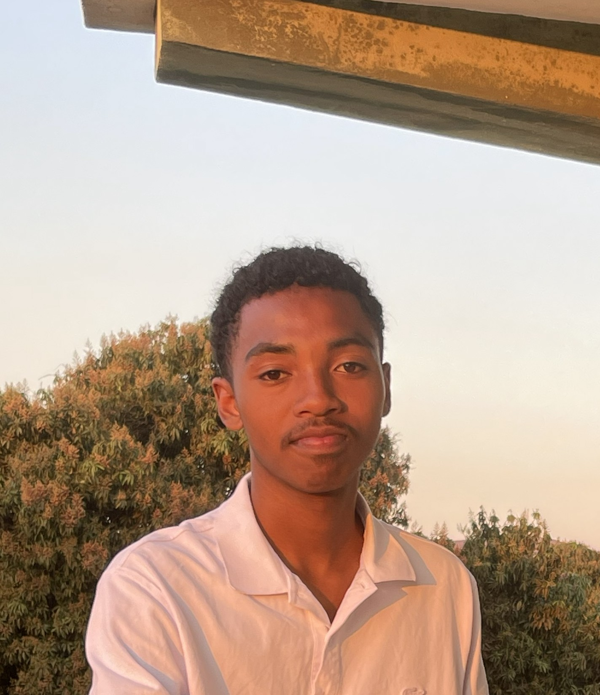

RATSIMBAZAFY Louis Abelot

Information personnelles
Date de naissance: 18 Aôut 2006
Adresse: Ambalakely Fianarantsoa
E-mail: Ratsimbazafylouisabelot@gamil.com
Parcours academiques
Etudes primaire au Collège privé Peter Pan Ihosy,Obtient le CEPE en 2017
Etude secondaires du premier cycle, au collège privé Peter Pan ihosy,Obtient le BEPC vers l'année 2022
Etude secondaires du second cycle, au Lycée privé Saint Pierre chanel Ihosy,Obtient le BACC serie Scientifique en 2025
Etude Univesitaire à L'Université Catholique Fianarantsoa de Madagascar.En ce jour, première année de licence
Experience Professionnel:
Caissier dans L'entreprise A.S.M-E.A.U Ihosy